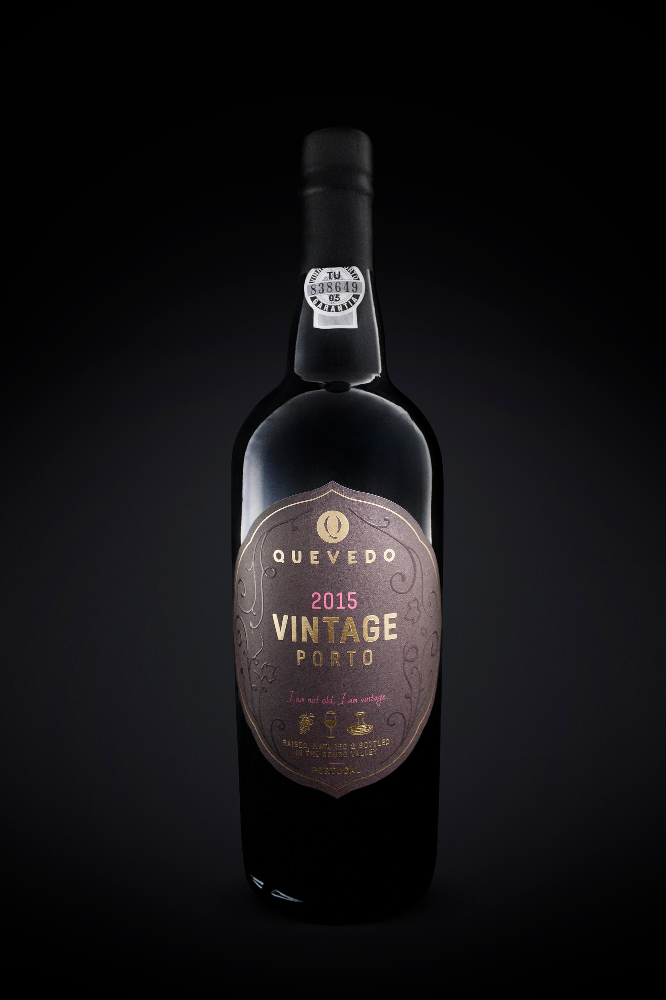

Quevedo Vintage
2017 / Label Design / Client: Vinoquel
Label Rebrand for Quevedo Port Wine. Other Labels in production, available soon.
Graphic Design: Rafaela Lucas
Creative director: André Kelly Breda
Brand Manager: Henri Sizaret
Photos: Rafaela Lucas
